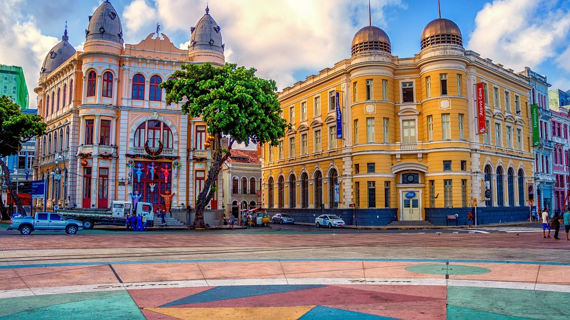

O marco zero em Recife
O Marco Zero do Recife é um dos pontos turísticos mais icônicos da cidade. Localizado no Bairro do Recife, é o local onde a cidade nasceu e é o ponto de partida para a contagem de distâncias para outras localidades do estado de Pernambuco.
O local é famoso por sua praça vibrante, eventos culturais e a bela vista para o Rio Capibaribe. Ao redor, é possível explorar bares, restaurantes e outros atrativos históricos da cidade.